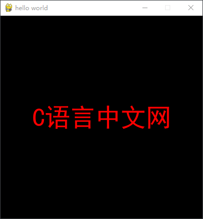
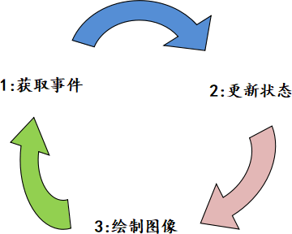

第一个Pygame程序
Pygame 作为一个入门级的游戏开发库，其实并不难学，只要掌握 Python 编程的相关知识就能很轻松地掌握它。
Pygame 语法简单、明了，秉持了 Python 语言一贯的风格。同时，它作为一个游戏开发库来说，具有图形编程的基本特点，如果您对于图形编程从未了解过，即使您有 Python 编程基础，也会略感迷茫。因此，在接下来的学习中会详细介绍 Pygame 的常用模块，以及图形编程中的相关概念，帮助您快速掌握 Pygame 的使用。
下面是一个简单的 Pygame 程序，如下所示：
Surface 翻译为表面、表层、外观，在 Pygame 中，您可以把 surface 对象理解成一张“白纸”，通过这张纸可以做许多的事情，比如在纸上添加文字、填充颜色、添加图片以及绘制任意形状的图形等。既然是“纸”就有规格尺寸，Pygame 允许您创建任意大小的纸。
那么我们应该如何创建 Surface 对象呢？Pygame 提供了多种创建 Surface 对象的方法，这里先介绍以下几种方法。
上述示例，使用如下方式创建了一个 surface 对象：
游戏大致来讲是由动画和人机交互的体验两部分构成，其中动画则是由一系列连续静止的图片，经过一定频率的刷新构成的，这个频率被称为 FPS，如果频率值越大则画面越流畅；如果频率值越小则画面会出现卡顿的感，在游戏过程中一般人能接受的最低 FPS 约为 30Hz，如果想要画面流畅则 FPS 要大于 60 Hz。
游戏画面和游戏操作状态会因为动画效果和玩家的操作而改变，因此需要以循环的方式实时地更新主屏幕（screen）的显示内容。把下列代码放入游戏主循环中即可实现实时更新和绘制屏幕内容，如下所示：
Pygame 语法简单、明了，秉持了 Python 语言一贯的风格。同时，它作为一个游戏开发库来说，具有图形编程的基本特点，如果您对于图形编程从未了解过，即使您有 Python 编程基础，也会略感迷茫。因此，在接下来的学习中会详细介绍 Pygame 的常用模块，以及图形编程中的相关概念，帮助您快速掌握 Pygame 的使用。
下面是一个简单的 Pygame 程序，如下所示：
#导入所需的模块
import sys
import pygame
# 使用pygame之前必须初始化
pygame.init()
# 设置主屏窗口
screen = pygame.display.set_mode((400,400))
# 设置窗口的标题，即游戏名称
pygame.display.set_caption('hello world')
# 引入字体类型
f = pygame.font.Font('C:/Windows/Fonts/simhei.ttf',50)
# 生成文本信息，第一个参数文本内容；第二个参数，字体是否平滑；
# 第三个参数，RGB模式的字体颜色；第四个参数，RGB模式字体背景颜色；
text = f.render("C语言中文网",True,(255,0,0),(0,0,0))
#获得显示对象的rect区域坐标
textRect =text.get_rect()
# 设置显示对象居中
textRect.center = (200,200)
# 将准备好的文本信息，绘制到主屏幕 Screen 上。
screen.blit(text,textRect)
# 固定代码段，实现点击"X"号退出界面的功能，几乎所有的pygame都会使用该段代码
while True:
# 循环获取事件，监听事件状态
for event in pygame.event.get():
# 判断用户是否点了"X"关闭按钮,并执行if代码段
if event.type == pygame.QUIT:
#卸载所有模块
pygame.quit()
#终止程序，确保退出程序
sys.exit()
pygame.display.flip() #更新屏幕内容
运行结果如下所示：

图1：第一个 Pygame 程序
如果您熟悉 Python 编程的基础知识，那么在注释的帮助下，应该能很容易地理解上述代码。假如不能也没有关系，因为接下来，我们会对上述代码进行细致的分析。常言道：“授人以鱼不如授人以渔”，分析代码的逻辑，有助于我们理解和编写 Pygame 程序，而至于代码中涉及的模块、方法等，会在后续内容做详细介绍。
图1：第一个 Pygame 程序
初始化程序
在使用 Pygame 编写程序前，要做的第一个步骤是“初始化程序”，代码如下所示：pygame.init()这是整个程序中的第一句代码，它的作用是自动检测 Pygame 软件包是否正常可用，并检查电脑的硬件调用接口、基础功能是否存在问题，比如音频、光驱、声卡驱动等设备。同时，它会完成 Pygame 中所有模块的初始化操作，比如 display（显示模块）、font（字体模块）、mixer（声音控制模块）、cursors（光标控制模块）等。
由此可见，初始化程序的重要性，因此上述代码，在编写程序时候千万不能“漏掉”。
创建Surface对象
想要掌握 Pygame 的编程逻辑，首先就要理解 surface 对象的概念，它是 Pygame 中最重要的组成部分。Surface 翻译为表面、表层、外观，在 Pygame 中，您可以把 surface 对象理解成一张“白纸”，通过这张纸可以做许多的事情，比如在纸上添加文字、填充颜色、添加图片以及绘制任意形状的图形等。既然是“纸”就有规格尺寸，Pygame 允许您创建任意大小的纸。
那么我们应该如何创建 Surface 对象呢？Pygame 提供了多种创建 Surface 对象的方法，这里先介绍以下几种方法。
上述示例，使用如下方式创建了一个 surface 对象：
#也叫screen对象，本质上是一个Surface，大小400*400 screen = pygame.display.set_mode((400,400))screen 的本质上就是一个 Surface 对象，它是游戏的主窗口，也就是整个游戏中尺寸最大的“纸”，任何其他的 Surface 对象都需要附着在这张最大的“纸”上，比如创建一个包含文本的 Surface 对象，通过以下方法将它绘制在主屏幕上：
#创建一个包含文字的Surface对象
text = f.render("C语言中文网",True,(255,0,0),(0,0,0))
#通过blit方法将其绘制在主屏幕上，这里的textRect表示位置坐标
screen.blit(text,textRect)
如果想创建一个包含图像的 surface 对象可以使用如下方法：
surface_image =pygame.image.load("图片路径")
事件监听
游戏，在我们日常生活中经常接触到，无论是手游、还是电脑端游戏，已经成了信息社会中，不可或缺的一部分。游戏大致来讲是由动画和人机交互的体验两部分构成，其中动画则是由一系列连续静止的图片，经过一定频率的刷新构成的，这个频率被称为 FPS，如果频率值越大则画面越流畅；如果频率值越小则画面会出现卡顿的感，在游戏过程中一般人能接受的最低 FPS 约为 30Hz，如果想要画面流畅则 FPS 要大于 60 Hz。
FPS 越高，细节越好，体验也越好，但是文件容量也越高
动画保证了玩家的视觉体验，而人机交互则是操作上的体验。通过移动和点击鼠标、按下键盘上的技能键，或是滑动手机屏幕等操作来实现人机交互，这些与游戏程序交互的操作被称为事件（Event）。如果您接触过 JavaScript，那么您对于“事件”这一名词，一定不会陌生。
Pygame 作为一个游戏开发库，同样具有设置和监听事件的功能。它提供了一个 enevt 事件模块，这个模块中包含了所有常用到游戏事件。下面是退出游戏的代码示例（其他事件类型，后续会做介绍）：
# 循环获取事件，监听事件状态，使用get()获取事件
for event in pygame.event.get():
# 判断事件类型，用户是否点了"X"关闭按钮
# pygame.QUIT 指点击右上角窗口的"X"号
if event.type == pygame.QUIT:
#点击后，卸载所有pygame模块
pygame.quit()
游戏循环
当打我们游戏时可能会触发游戏中的各种事件，比如鼠标事件、键盘按键事件、摄像拍照事件等等，因此游戏程序需要一直循环监听玩家的操作，只有当用户点击了游戏“关闭”按钮时，监听才会结束。如果想要达到“循环监听”目的，此时就需要设置一个游戏循环（Game Loop）也称为游戏的主循环，这样才能保证人机交互的体验感。代码示例如下：
#游戏主循环(游戏循环)
while True:
# 循环获取事件，监听事件
for event in pygame.event.get():
# 判断用户是否点了关闭按钮
if event.type == pygame.QUIT:
# 当用户关闭游戏窗口时执行以下操作
# 这里必须调用quit()方法，退出游戏
pygame.quit()
#终止系统
sys.exit()
#更新并绘制屏幕内容
pygame.display.flip()
游戏主循环是每个 Pygame 游戏程序中必不可少的一部分，它主要承担着以下三个重要任务：
- 处理游戏事件
- 更新游戏状态
- 把更新后的游戏状态绘制到屏幕上

图2：主循环示意图
图2：主循环示意图
游戏画面和游戏操作状态会因为动画效果和玩家的操作而改变，因此需要以循环的方式实时地更新主屏幕（screen）的显示内容。把下列代码放入游戏主循环中即可实现实时更新和绘制屏幕内容，如下所示：
#刷新界面显示 pygame.display.flip()除了上述方法外，Pygame 还提供了另一个方法。如下所示：
pygame.display.update()这两个方法的主要区别是：后者可以根据选定的区域来更新部分内容，而前者则是更新整个待显示的内容。如果后者没有提供区域位置参数时，其作用和 display.flip() 相同。
通过上述学习，我们对 Pygame 程序有了基本的认识。下面对 Pygame 模块中的方法、属性做更加细致的讲解。
关注公众号「站长严长生」，在手机上阅读所有教程，随时随地都能学习。内含一款搜索神器，免费下载全网书籍和视频。

微信扫码关注公众号